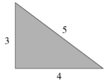
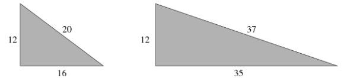

Định lý nổi tiếng mang tên nhà toán học người Hy Lạp Pythagoras phát biểu rằng trong một tam giác vuông thì bình phương độ dài cạnh huyền c bằng tổng bình phương độ dài hai cạnh góc vuông a và b.
Trên thực tế luôn tồn tại những tam giác vuông có độ dài của ba cạnh là các số nguyên, ví dụ như:

Một số ví dụ khác cho trường hợp a = 12 như:

Bạn được cho trước số nguyên a là độ dài của một cạnh góc vuông, nhiệm vụ của bạn là hãy viết một chương trình để đếm xem có bao nhiêu số nguyên b (b>a) là độ dài của cạnh góc vuông còn lại sao cho độ dài cạnh huyền c là một số nguyên.
Dữ liệu nhập:
- Là số nguyên a (1 ≤ a ≤ 106) là chiều dài của cạnh góc vuông nhỏ
Dữ liệu xuất:
- Là số lượng số nguyên b là độ dài của cạnh góc vuông lớn hơn tìm được sao cho độ dài cạnh huyền c là một số nguyên.